NCERT Solutions For Class 12 Chemistry Chapter 9 Coordination Compounds
Topics and Subtopics in NCERT Solutions for Class 12 Chemistry Chapter 9 Coordination Compounds:
| Section Name | Topic Name |
| 9 | Coordination Compounds |
| 9.1 | Werner’s Theory of Coordination Compounds |
| 9.2 | Definitions of Some Important Terms Pertaining to Coordination Compounds |
| 9.3 | Nomenclature of Coordination Compounds |
| 9.4 | Isomerism in Coordination Compounds |
| 9.5 | Bonding in Coordination Compounds |
| 9.6 | Bonding in Metal Carbonyls |
| 9.7 | Stability of Coordination Compounds |
| 9.8 | Importance and Applications of Coordination Compounds |
NCERT Solutions CBSE Sample Papers ChemistryClass 12 Chemistry
NCERT INTEXT QUESTIONS
9.1. Write the formulas for the following coordination compounds:
(i)Tetraamminediaquacobalt(IlI) chloride
(ii)Potassium tetracyanidonickelate(II)
(iii)Tris(ethanp-1,2-diamine) chromium(III) chloride
(iv)Amminebromidochloridonitrito-N- platinatc(II)
(v)Dichloridobis(ethane-l ,2-diamine) platinum (IV) nitrate
(vi)Iron(III)hexacyanidoferrate(II)
Ans: (i) [CO(NH3)4(H2O)2]Cl3.
(ii)K2[Ni(CN)4]
(iii)[Cr(en)3]Cl3
(iv)[Pt (NH3) Br Cl (N02)]–
(v)[PtCl2(en)2](N03)2
(vi)Fe4[Fe(CN)6]3
9.2. Write IUPAC names of following co-ordination compounds :
(a) [CO(NH3)6]Cl3
(b) [CO(NH3)Cl]Cl2
(C) K3[Fe(CN)6]
(d) [K3[Fe(C2O4)3]
(e) K2[PdCl4]
(f) [Pt(NH3)2ClNH2CH3]Cl. (C. B. S. E. Delhi2013)
Ans:
(a) hexaamminecobalt (III) chloride
(b) pentaamminechloridocobalt (III) chloride
(c) potassium hexacyanoferrate (III)
(d) potassium trioxalatoferrate (III)
(e) potassium tetrachloridoplatinum (II)
(f) diamminechlorido (methylamine) platinum(II) chloride.
9.3. Indicate the types of isomerism exhibited by the . . following complexes and draw the structures for these isomers:
(i)K[Cr(H2O)2(C2O4)2]
(ii)[CO(en)3]Cl3
(iii)[CO(NH3)5(NO2)(NO3)2], .
(iv)[Pt(NH3)(H2O)Cl2]
Ans: (i)(a) geometrical isomerism (cis and tram)
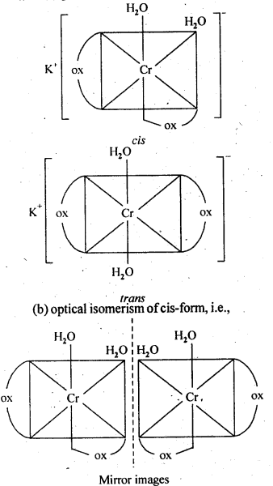
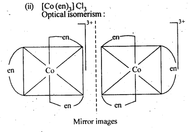
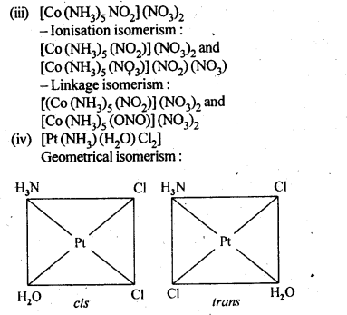
9.4. Give evidence that [Co(NH3)5Cl]S04 and [Co(NH3)5S04]Cl are ionisation isomers.
Ans: When dissolved in water, they give different ions in solution which can be tested by adding AgN03 solution and BaCl2 solution, i.e.,
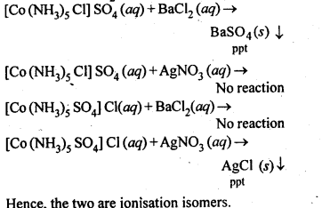
9.5. Explain on the basis of valence bond theory that [Ni(CN)4]2- ion with square planar structure is diamagnetic and [NiCl4]2- ion with tetrahedral geometry is paramagnetic. (Rajasthan Board 2012)
Ans: Outer electronic configuration of nickel (Z = 28) in ground state is 3d84s2. Nickel in this complex is in + 2 oxidation state. It achieves + 2 oxidation state by the loss of the two 4s-electrons. The resulting Ni2+ ion has outer electronic configuration of 3d8. Since CN– ion is a strong field, under its attacking influence, two unpaired electrons in the 3d orbitals pair up.
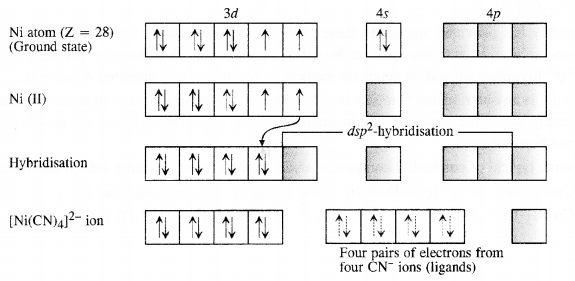
Outer electronic configuration of nickel (Z = 28) in ground state is 3d84s2 Nickel in this complex is in + 2 oxidation state. Nickel achieves + 2 oxidation state by the loss of two 4s-electrons. The resulting Ni2+ ion has outer electronic configuration of 3d8. Since CP ion is a weak field ligand, it is not in a position to cause electron pairing.
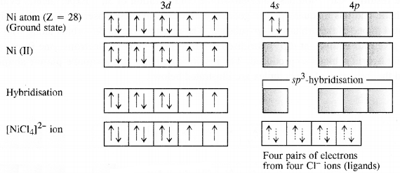
9.6. [NiCl4]2- is paramagnetic while [Ni(CO)4] is diamagnetic though both are tetrahedraL Why?
Ans:

9.7. [Fe(H2O)6]3+is strongly paramagnetic whereas [Fe(CN)6]3-is weakly paramagnetic. Explain.
Ans:
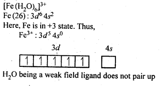

9.8. Explain[CO(NH3)6]2+ is an inner orbital complex.whereas [Ni(NH3)6]2+ is an outer orbital complex.
Ans:
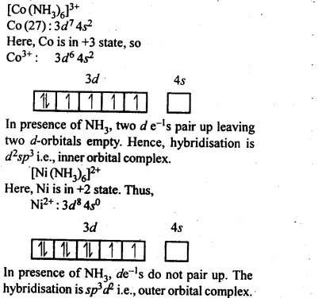
9.9. Predict the number of unpaired electrons in the square planar [Pt(CN)4]2- ion.
Ans:
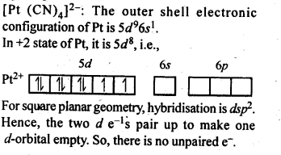
9.10. The hexaaquamanganese (II) ion contains five unpaired electrons while the hexacyano ion contains only one unpaired electron. Explain using crystal field theory.
Ans: Mn(II) ion has 3d5 configuration. In the presence of H2O molecules acting as weak field ligands, the distribution of these five electrons is \({ t }_{ 2 }^{ 3 }\)ge2 i. e., all the electrons remain unpaired to form a high spin complex. However, in the presence of CN– acting as strong field ligands, the distribution of these electrons is \({ t }_{ 2g }^{ 5 }{ e }_{ g }^{ 0 }\) i.e., two t2g orbitals contain paired electrons while the third t2g orbital contains one unpaired electron. The complex formed is a low spin complex.
9.11. Calculate the overall complex dissociation equilibrium constant for the Cu(NH3)42+ ion, given that β4 for this complex is 2.1 x 1013.
Ans: Overall stability constant (β4) = 2.1 x 1013.
Thus, the overall dissociation constant is
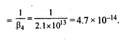
NCERT EXERCISES
9.1. Explain the bonding in coordination compounds in terms of Werner’s postulates.
Ans: The main postulates of Werner’s theory of coordination compounds are as follows:
(a)Metals possess two types of valencies called
(i) primary valency which are ionisable; (ii) secondary valency which are non- ionisable
(b)Primary valency is satisfied by the negative ions and it is that which a metal exhibits in the formation of its simple salts.
(c)Secondary valencies are satisfied by neutral ligand or negative ligand and are those which metal exercises in the formation of its complex ions. Every cation has a fixed number of secondary valencies which are directed in space about central metal ion in certain fixed directions, e.g„ In CoCl3-6NH3, valencies between Co and Cl are primary valencies and valencies between Co and NH3 are secondary. In COCl3-6NH3 , six ammonia molecules linked to Co by secondary valencies are directed to six corners of a regular octahedron and thus account for structure of COCl3-6NH3 as follows:
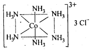
In modern theory, it is now referred as coordination number of central metal atom or ion.
9.2. FeSO4 solution mixed with (NH4)2SO4 solution in 1 : 1 molar ratio gives the test of Fe2+ ion but CuSO4 solution mixed with aqueous ammonia in 1 : 4 molar ratio does not give the test of Cu2+ ion. Explain why?
Ans: When FeSO4 and (NH4)2SO4 solutions are mixed in 1 : 1 molar ratio, a double salt known as Mohr’s salt is formed. It has the formula FeSO4.(NH4)2SO4.6H2O. In aqueous solution, the salt dissociates as :
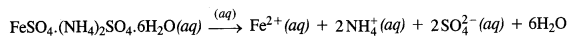
The solution gives the tests for all the ions including Fe2+ ions. On the other hand, when CuSO4 and NH3 are mixed in the molar ratio of 1 : 4 in solution, a complex [Cu(NH3)4]SO4 is formed. Since the Cu2+ ions are a part of the complex entity (enclosed in square bracket), it will not give their characteristic tests as are given by Fe2+ ions.
9.3. Explain with two examples each of the following: coordination entity, ligand, coordination number, coordination polyhedron, homoleptic and heteroleptic.
Ans: Coordination entity: It constitutes of a central atom/ion bonded to fixed number of ions or molecules by coordinate bonds e.g. [COCl3(NH3)3], [Ni (CO)4] etc.
Ligand : The ions/molecules bound to central atom/ion in coordination entity are called ligands. Ligands in above examples are CL, NH3, CO Coordination number : This is the number of bond formed by central atom/ion with ligands. Coordination polyhedron : Spatial arrangement of ligands defining the shape of complex. In above cases Co and Ni polyhedron are octahedral and tetrahedral in [CoCl3 (NH3)3] and [Ni(CO)4] respectively.
Homoleptic : Metal is bound to only one kind of ligands eg Ni in[Ni(CO)4]
Heteroletric Metal is bound to more than one kind of ligandseg Coin [CoCl3(NH3)3]
9.4. What is meant by unidentate didentate and ambidentate ligands? Give two examples for each.
Ans: A molecule or an ion which has only one donor atom to form one coordinate bond with the central metal atom is called unidentate ligand, e.g,, Cl- and NH3.
A molecule or ion which contains two donor atoms and hence forms two coordinate bonds with the central metal atom is called adidentate
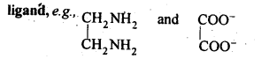
A molecule or an ion which contains two donor atoms but only one of them forms a coordinate bond at a time with the central metal atom is called
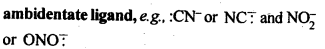
9.5. Specify the oxidation numbers of the metals in the following coordination entities:
(i) [Co(H2O)(CN)(en)2]2+ (ii) [CoBr2(en)2]+ (iii) [PtCl4]2- (iv) K3[Fe(CN)6] (v) [Cr(NH3)3CI3]
Ans:
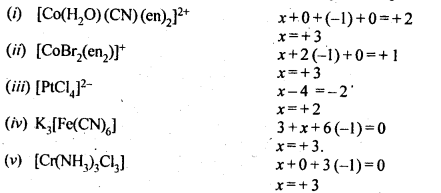
9.6. Using IUPAC norms, write the formulae for the following : (C.B.S.E. Foreign 2015)
(a) tetrahydroxozincate(II)
(b) hexaammineplatinum (TV)
(c) potassiumtetrachloridopalladate(II)
(d) tetrabromidocuprate (II)
(e) hexaaminecobalt(III) sulphate
(f) potassiumtetracyanonicklate (II)
(g) potassiumtrioxalatochromate(III)
(h) pentaamminenitrito-O-cobalt(III)
(i) diamminedichloridoplatinum(II)
(j) pentaamminenitrito-N-cobalt (III). (C.B.S.E. Delhi 2012)
Ans: (a) [Zn(OH)4]2-
(b) [Pt(NH3)6]4+
(c) K2[PdCl4]
(d) [Cu(Br)4]2-
(e) [CO(NH3)6]2 (SO4)3
(f) K2[Ni(CN)4]
(g) K3 [Cr(OX)3]
(h) [CO(NH3)5ONO]2+
(i) [Pt(NH3)2Cl2]
(j) [CO(NH3)5NO2]2+.
9.7. Using IUPAC norms write the systematic names of the following:
(i) [Co(NH3)6]CI3,
(ii)[Pt(NH3)2CI (NH2CH3)] Cl
(iii) [Ti(H20)6]3+
(iv) [Co(NH3)4Cl(N02)]CI
(v)|Mn(H20)6]2+
(vi)[NiCl4]2-
(vii)[Ni(NH3)6]CI2
(viii)[Co(en)3]3+
(ix) [Ni(CO)4]
Ans: (i) Hexaammine cobalt (III) chloride.
(ii) Diammine chlorido (methylamine) platinum (II) chloride.
(iii) Hexaaquatitanium (III) ion.
(iv) Tetraammine chlorido nitrito-N-cobalt (IV) chloride.
(v)Hexaaquamanganese (II) ion.
(vi)Tetrachloridonickelate (II) ion.
(vii)Hexaammine nickel (II) chloride.
(viii)Tris (ethane -1,2-diamine) cobalt (III) ion.
(ix) Tetra carbonyl nickel (0).
9.8. List various types of isomerism possible for coordination compounds, giving an example of each.
Ans: Coordination compounds exhibit stereo isomerism and structural isomerism.
Two types of stereoisomerism and their examples are as follows.
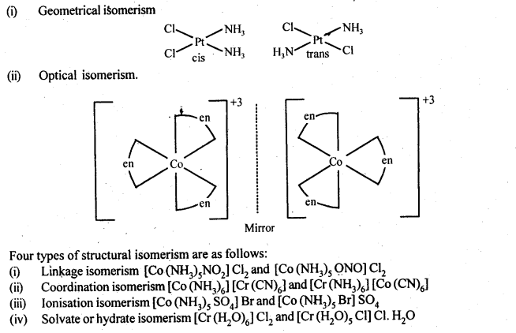
9.9. How many geometrical isomers are possible in . the following coordination entities?
(i) [Cr(C2O4)3]3- (ii) [CoCl3(NH3)3]
Ans: (i) [Cr(C2O4)3]3- => No geometrical isomers
are possible in this coordination entity.
(ii) [Co(NH3)3 Cl3] => Two geometrical isomers are possible (fac and mer) in this coordination entity.
9.10. Draw the structures of optical isomers of
(i) [Cr(C2O4)3]3-
(ii)[PtCI2(en)2]2+
(iii)[Cr(NH3)2CI2(en)]+
Ans:
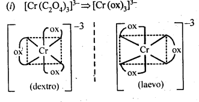
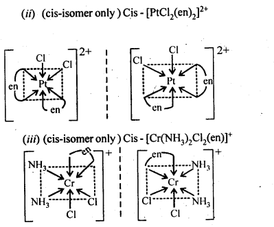
9.11. Draw all the isomers (geometrical and optical) of
(i)[CoCl2(en)2]+
(ii)[Co(NH3) Cl (en)2]2+
(iii) [Co(NH3)2Cl2(en)]+
Ans:

9.12. Write all the geometrical isomers of [Pt(NH3)(Br)(Cl) (Py)] and how many of these will exhibit optical isomerism?
Ans: Three isomers of[Pt(NH3)(Br)(Cl)(Py)] are possible.
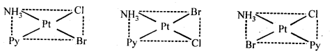
These are obtained by keeping the position of one of the ligand, say NH3 fixed and rotating the positions of others. This type of isomers do not show any optical isomerism. Optical isomerism only rarely occurs in square planar or tetrahedral complexes and that too when they contain unsymmetrical chelating ligand.
9.13. Aqueous copper sulphate solution (blue in colour) gives: (i) a green precipitate with aqueous potassium fluoride and (ii)a bright green solution with aqueous potassium chloride. Explain these experimental results.
Ans: Aqueous CuS04 solution exists as [Cu(H20)4]S04 which has blue colour due to [Cu(H20)4]2+ ions.
(i) When KF is added, the weak H20 ligands are replaced by F– ligands forming [CUF4]2- ions which is a green precipitate.
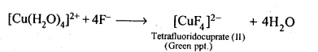
(ii)When KCl is added, Cl– ligands replace the weak H20 ligands forming [CuCl4]2- ion which has bright green colour.
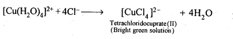
9.14. What is the coordination entity formed when excess of aqueons KCN is added to an aqueous solution of copper sulphate? Why is it that no precipitate of copper sulphide is obtained when H2S (g) is passed through this solution?
Ans: First cupric cyanide is formed which decomposes to give cuprous cyanide and cyanogen gas. Cuprous cyanide dissolves in excess of potassium cyanide to form the complex, K3[Cu(CN)4],
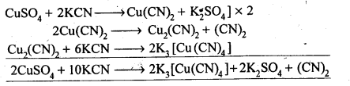
Thus, coordination entity formed in the above reaction is [Cu(CN)4]3-. As CN– is a strong ligand, the complex ion is highly stable and does not dissociate/ionize to give Cu2+ ions. Hence, no precipitate,with H2S is formed.
9.15. Discuss the nature of bonding in the following coordination entities on the basis of valence bond theory:
(i) [Fe(CN)6]4-
(ii) [FeF6]3-
(iii) [Co(C2O4)3]3-
(iv) [CoF6]3-
Ans:
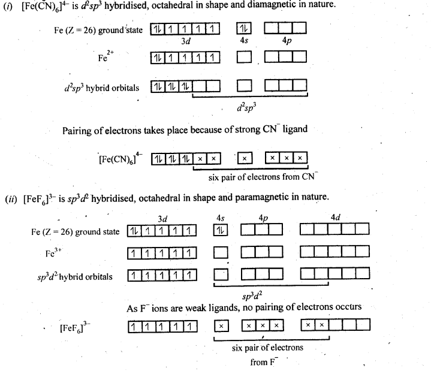
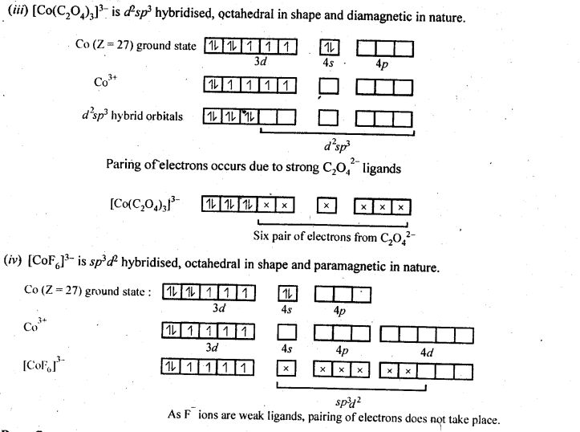
9.16. Draw figure to show the splitting of d-orbitals in an octahedral crystal field.
Ans:
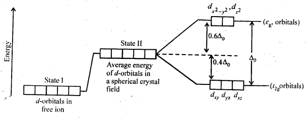
9.17. What is spectrochemical series? Explain the difference between a weak field ligand and a strong field ligand.
Ans: The crystal field splitting, ∆0, depends upon the field produced by the ligand and charge on the metal ion. Some ligands are able to produce strong fields in which, the splitting will be large whereas others produce weak fields and consequently result in small splitting of d-orbitals. In general, ligands can be arranged in a series in the order of increasing field strength as given below :
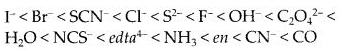
9.18. What is crystal field splitting energy? How does the magnitude of Δ0 decide the actual configuration of d-orbitals in a coordination entity?
Ans: When the ligands approach a transition metal ion, the d-orbitals split into two sets, one with lower energy and the other with higher energy. The difference of energy between the two sets of orbitals is called crystal field splitting energy (Δ0 for octahedral field). If Δ0 < P (pairing energy), the fourth electron enters
one of the e°g, orbitals giving the configuration t32ge1g, thus forming high spin complexes. Such ligands for which Δ0 < P are called weak field ligands. If Δ0 > P, the fourth electron pairs up in one of the t2g orbitals giving the configuration t42ge1g thereby forming low spin complexes. Such ligands for which Δ0> P are called strong field ligands.
9.19. [Cr(NH3)6]3+ is paramagnetic while [Ni(CN)4]2- is diamagnetic. Explain why?
Ans:
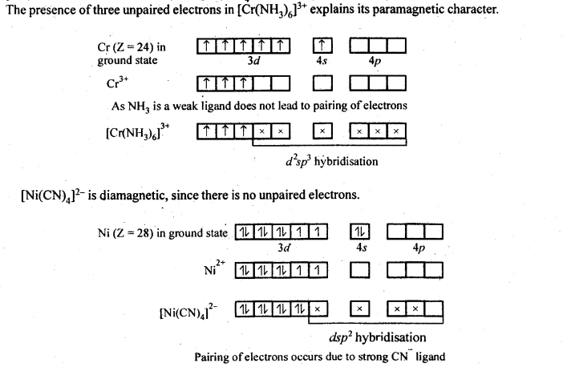
9.20. A solution of [Ni(H20)6]2+ is green but a solution of [Ni(CN)4]2-is colourless. Explain.
Ans: In [Ni(H20)6]2+, Ni is in + 2 oxidation state and having 3d8 electronic configuration, in which there are two unpaired electrons which do not pair in the presence of the weak H20 ligand. Hence, it is coloured. The d-d transition absorbs red light and the complementary light emitted is green.
In [Ni(CN)4]2- Ni is also in + 2 oxidation state and having 3d8 electronic configuration. But in presence of strong ligand CN– the two unpaired electrons in the 3d orbitals pair up. Thus, there is no unpaired electron present. Hence, it is colourless.
9.21. [Fe(CN)6]4- and [Fe(H2O)6]2+ are of different colours in dilute solutions. Why?
Ans: In both the complexes, Fe is in + 2 oxidation state with d6 configuration. This means that it has four unpaired electrons.Both CN– ion and H2O molecules which act as ligands occupy different relative positions in the spectrochemical series. They differ in crystal field splitting energy (∆0). Quite obviously, they absorb radiations corresponding to different wavelengths/frequencies from the visible region of light. (VIBGYOR) and the transmitted colours are also different. This means that the complexes have different colours in solutions.
9.22. Discuss the nature of bonding in metal carbonyls.
Ans: In metal carbonyl, the metal carbon bond (M – C) possess both the σ and π -bond character. The bond are formed by overlap of atomic orbital of metal with that of C-atom of carbon monoxide in following sequence:
(a)σ -bond is first formed between metal and carbon when a vacant d-orbital of metal atom overlaps with an orbital containing lone pair of electrons on C-atom of carbon monoxide (: C = O:)
(b)In addition to σ -bond in metal carbonyl, the electrons from filled d-orbitals of a transition metal atom/ ion are back donated into anti bonding π-orbitals of carbon monoxide. This stabilises the metal ligand bonding. The above two concepts are shown in following figure:
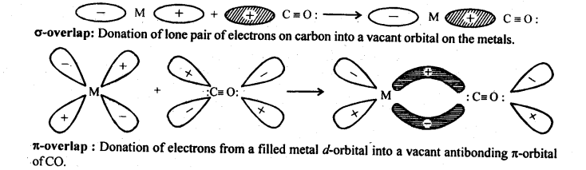
9.23. Give the oxidation state, d-orbital occupation and coordination number of the central metal ion in the following complexes:
(i)K3[CO(C2O4)3I (ii) cis-[Cr(en)2Cl2]Cl (iii) (NH4)2[CoF4] (iv) [Mn(H20)6]SO4
Ans: (i) K3[Co(C2O4)3] =>[CO(C204)3]3-. x + 3 (-2) = -3 . Oxidation state, x=+3 Coordination number is also 6 as C2042- is didentate. Co+3 is a case in which all electrons are paired
(ii) cis – [Cr(en)2Cl2]+ Cl–
x + 0—2 =+1
Oxidation state, x =+3
Coordination number is 6 as ‘en’ is didentate. Cr3+ is a cfi case, paramagnetic.
(iii) (NH4)2[COF4] = (NH4)22+[COF4]2-
x —4 =—2.
Oxidation state, x = + 2
Coordination number=4.
Co2+ is a d5 case, paramagnetic
(iv)[Mn(H20)6]2+S042-
x+0f+2
.•. Oxidation state, x- + 2
Coordination number is 6.
Mn+2 is a d5 case, paramagnetic
9.24. Write down the IUPAC name for each of the following complexes and indicate the oxidation state, electronic configuration and coordination number. Also give stereochemistry and magnetic moment of the complex:
(i) K[Cr(H20)2(C204)2|-3H20 (ii) [Co(NH3)5CIlCl2 (iii) CrCI3(Py)3
(iv)Cs[FeCl4] (v)K4|Mn(CN)6|
Ans: (i) K[Cr(H20)2(C204)2|-3H20 IUPAC name is potassiumdiaquadioxalatochromate (III) hydrate.
Coordination number = 6
Oxidation state of Cr: x + 0 + 2 (-2) = – 1
.‘. x = + 3
Shape is octahedral Electronic configuration of Cr3+ = 3d3=t32ge°g .
Magnetic moment,
\(\mu =\sqrt { n(n+2 } =\sqrt { 3×5 } =\sqrt { 15 } BM\)
= 3-87 BM
(ii) [Co(NH3)5CIlCl2IUPAC name is pentaamminechloridocobalt (III) chloride Coordination number of Co = 6 Shape is octahedral.
Oxidation state of Co, x + 0 -1 = + 2 .’. x = + 3
Electronic configuration of Co3+ = 3d6 = t62ge°g n=0, μ =0 .
(iii) CrCI3(Py)3. IUPAC name is
trichloridotripyridine chromium (III).
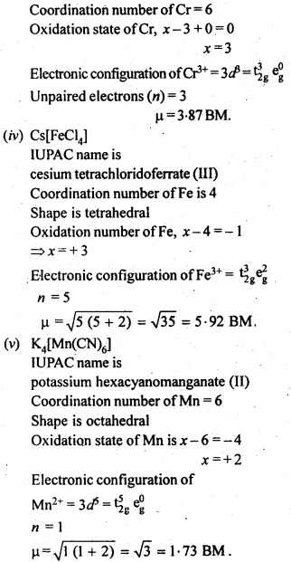
9.25. What is meant by stability of a coordination compound in solution? State the factors which govern stability of complexes.
Ans: Formation of a complex in solution is an equilibrium reaction. It may be represented as
\(M+4L\rightleftharpoons M{ \quad L }_{ 4 }\)
The equilibrium constant of this reaction is the measure of stability of the complex. Hence the equilibrium constant is also called as stability constant or Instability constant may be defined as equilibrium constant for reverse reaction. The formation of above complex may also be written in successive steps:
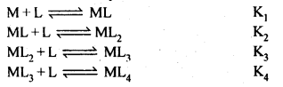
Stability constant is written as
β4=K1K2K3K4.
Greater the stability constant, stronger is the metal-ligand bond.
The stability of complex will depend on
(a)nature of metal
(b)Oxidation state of metal
(c)Nature of ligand e g. chelating ligand form stabler complexes
(d)Greater the basic strength of the ligand, more will be the stability.
9.26. What is meant by the chelate effect? Give an example.
Ans: When a didentate or a polydentate ligand contains donor atoms positioned in such a way that when they coordinate with the central metal ion, a five or a six membered ring is formed, the effect is called chelate effect. For example,
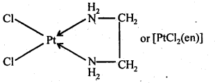
9.27. Discuss briefly giving an example in each case the role of coordination compounds in :
(a) biological systems,
(b) analytical chemistry,
(c) medicinal chemistry, and
(d) extraction/metallurgy of metals.
Ans:
(i) Coordination compounds are of great importance in biological systems. The pigment responsible for photosynthesis, chlorophyll, is a coordination compound of magnesium. Haemoglobin, the red pigment 1 of blood which acts as oxygen carrier is a coordination compound of iron. Vitamin B12, cyanocobalamine, the anti- pernicious anaemia factor, is a coordination compound of cobalt. Among the other compounds of biological importance with coordinated metal ions are the enzymes like, carboxypeptidase A and carbonic anhydrase (catalysts of biological systems).
(ii) There is growing Interest in the use of chelate therapy in medicinal chemistry. An example is the treatment of problems caused by the presence of metals in toxic proportions in plant/animal systems. Thus, excess of copper and iron are removed by the chelating ligands D-penicillamine and desferrioxime B via the formation of coordination compounds.
EDTA is used in the treatment of lead poisoning. Some coordination compounds of platinum effectively inhibit the growth of tumours. Examples are: ds-platin and related compounds.
(iii) Coordination compounds find use in many qualitative and quantitative chemical analysis. The familiar colour reactions given by metal ions with a number of ligands (especially chelating ligands), as a result of formation of coordination entities, form the basis for their detection and estimation by classical and instrumental methods of analysis. Examples of such reagents include EDTA, DMG (dimethylglyoxime), a-nitroso- β-naphthol, cupron, etc.
(iv) Some important extraction processes of metals, like those of silver and gold, make use of complex formation. Gold, for example, combines with cyanide in the presence of oxygen and water to form the coordination entity [Au(CN)2]- in aqueous solution. Gold can be separated in metallic form from this solution by the addition of zinc.
9.28. How many ions are produced from the complex Co(NH3)6Cl2 in solution?
(i) 6
(ii) 4
(iii)3
(iv)2
Ans: Coordination number of cobalt = 6
Hence, the complex is [Co (NH3)6] Cl2. It ionizes in the solution as follows :
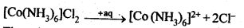
Thus, three ions are produced. Hence, the correct option is (iii)
9.29. Amongst the following ions? Which one has the highest magnetic moment value:
(i) [Cr(H2O)6]3+
(ii) [Fe(H20)6]2+ (iii) [Zn(H20)6]2+
Ans: The oxidation states are: Cr (III), Fe (II) and Zn (II).
Electronic configuration of Cr3+ = 3d3, unpaired electron = 3
Electronic configuration of Fe2+ = 3d6, unpaired electron = 4
Electronic configuration ofZn2+ = 3d10, unpaired electrons = 0
\(\mu =\sqrt { n\quad (n+2) }\)
where V is number of unpaiared electrons Hence, (ii) has highest value of magnetic moment.
9.30. The oxidation number of cobalt in K[Co(CO)4] is
(i)+1
(ii)+3
(iii)-1
(iv)-3
Ans:
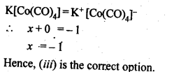
9.31. Amongst the following, the most stable complex is:
(i) [Fe(H2O)6] (ii) [Fe(NH3)6]3+
(iii) [Fe(C2O4)3]3- (iv) [FeCl6]3-
Ans: In each of the given complex, Fe is in + 3 oxidation state. As C2042-is didentate chelating ligand, it forms chelate rings and hence (iii) out of complexes given above is the most stable complex.
9.32. What will be the correct order for the wavelengths of absorption in the visible region for the following:[Ni(NO2)6]4-, [Ni(NH3)6]2+, [Ni(H20)6]2+?
Ans: As metal ion is fixed, the increasing field strengths, i.e., the CFSE values of the ligands from the spectro-chemical series are in the order: H20<NH3< NO2–;
Thus, the energies absorbed for excitation will be in the order:
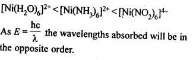
More Resources for CBSE Class 12: